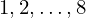

Theorem tuple_len_8_typical_eq of type Forall¶
from the theory of proveit.numbers.numerals.decimals¶
see dependencies
In [1]:
import proveit
# Automation is not needed when only building an expression:
proveit.defaults.automation = False # This will speed things up.
proveit.defaults.inline_pngs = False # Makes files smaller.
%load_theorem_expr # Load the stored theorem expression as 'stored_expr'
# import the special expression
from proveit.numbers.numerals.decimals import tuple_len_8_typical_eq
In [2]:
# check that the built expression is the same as the stored expression
assert tuple_len_8_typical_eq.expr == stored_expr
assert tuple_len_8_typical_eq.expr._style_id == stored_expr._style_id
print("Passed sanity check: tuple_len_8_typical_eq matches stored_expr")
In [3]:
# Show the LaTeX representation of the expression for convenience if you need it.
print(stored_expr.latex())
In [4]:
stored_expr.style_options()
In [5]:
# display the expression information
stored_expr.expr_info()
| core type | sub-expressions | expression | |
|---|---|---|---|
| 0 | Operation | operator: 1 operand: 3 |  |
| 1 | Literal |  | |
| 2 | ExprTuple | 3 | |
| 3 | Lambda | parameters: 9 body: 4 | |
| 4 | Operation | operator: 5 operands: 6 | |
| 5 | Literal |  | |
| 6 | ExprTuple | 7, 8 | |
| 7 | Operation | operator: 10 operands: 9 | |
| 8 | Operation | operator: 10 operands: 11 |  |
| 9 | ExprTuple | 12, 13, 14, 15, 16, 17, 18, 19 | |
| 10 | Literal |  | |
| 11 | ExprTuple | 20 |  |
| 12 | Variable |  | |
| 13 | Variable |  | |
| 14 | Variable |  | |
| 15 | Variable |  | |
| 16 | Variable |  | |
| 17 | Variable |  | |
| 18 | Variable |  | |
| 19 | Variable |  | |
| 20 | ExprRange | lambda_map: 21 start_index: 22 end_index: 23 |  |
| 21 | Lambda | parameter: 25 body: 25 |  |
| 22 | Literal |  | |
| 23 | Literal |  | |
| 24 | ExprTuple | 25 |  |
| 25 | Variable |  |